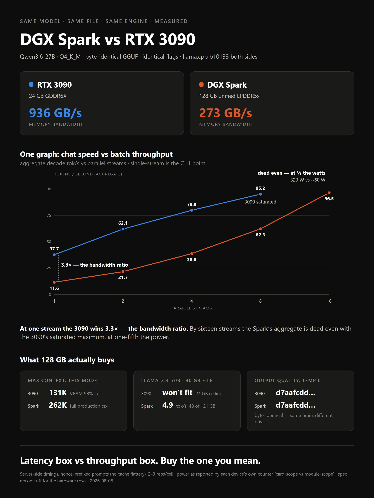

SAME MODEL · SAME FILE · SAME ENGINE · MEASURED 2026-08-08
DGX Spark vs RTX 3090
Qwen3.6-27B · Q4_K_M GGUF (17.2 GiB, sha256-verified identical copy) · llama.cpp build 10133 both sides
(native sm_121 on the Spark, CUDA on the 3090) · identical serving flags · server-side timings, nonce-prefixed prompts.
All three graphs, one animation
Headline results
| test | RTX 3090 · 936 GB/s | DGX Spark · 273 GB/s | ratio |
|---|
| decode, 1 stream | 39.1 tok/s | 12.1 tok/s | 3.2× |
| decode, 1 stream + MTP spec | 52.0 | 17.1 | 3.0× |
| aggregate @ 8 / 16 streams | 95.2 / ~95 (saturated) | 62.3 / 96.5 | 1.0× @16 |
| power under load | ~323 W | ~50–66 W | ≥5× |
| max context (this model, q8 KV) | 131,072 (163,840 OOM) | 262,144 runs | 2× |
| Llama-3.3-70B Q4_K_M (40 GB) | does not fit | 4.9 tok/s | ∞ |
| greedy output, temp 0 | sha256 identical — same brain, different physics | 1:1 |
Decode & prefill at context depth — to each machine’s ceiling
| context depth | RTX 3090 | DGX Spark |
|---|
| prefill | decode | prefill | decode |
|---|
| ~900 | 1,215 | 38.9 | 798 | 11.6 |
| ~8.6K | 1,321 | 37.1 | 819 | 11.3 |
| ~26K | 1,230 | 33.9 | 762 | 10.8 |
| ~49K | 1,119 | 30.4 | 725 | 10.3 |
| ~89K | 948 | 25.6 | 644 | 9.4 |
| ~125K | 838 | 22.3 | 592 | 8.7 |
| ~179K | beyond 131K ceiling | 526 | 7.9 |
| ~249K | — | 456 | 6.8 |
At the 3090’s ceiling the decode gap has narrowed from 3.4× to 2.6× — the Spark’s decline with depth is
gentler. Past 131K only one line continues. Single rep on the two ≥179K rungs (observed rep variance ±1%).
Per-stream decode under load
| streams | 3090 per-stream | Spark per-stream | 3090 aggregate | Spark aggregate |
|---|
| 1 | 39.0 | 11.7 | 37.7 | 11.6 |
| 2 | 33.2 | 11.0 | 62.1 | 21.7 |
| 4 | 21.8 | 10.0 | 79.9 | 38.8 |
| 8 | 13.2 | 8.1 | 95.2 | 62.3 |
| 16 | saturated @8 | 6.3 | ~95 | 96.5 |
Under real multi-user load the felt gap shrinks: 13.2 vs 8.1 tok/s per user at eight streams —
while the Spark draws one-fifth the power.
The plate

Latency box vs throughput box. Buy the one you mean.
{kind=link}